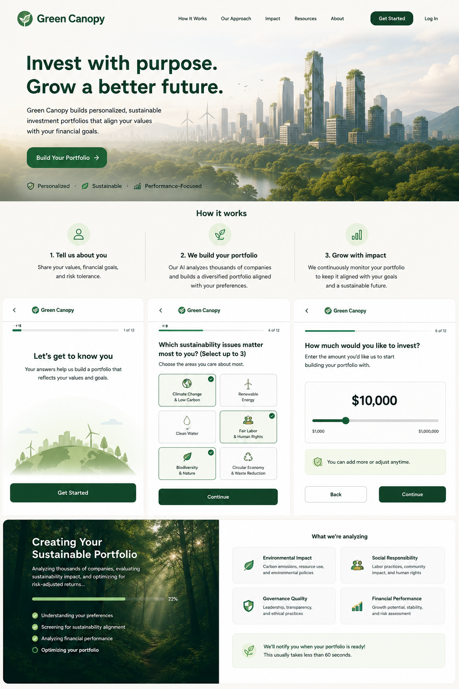

01 · DISCOVER
◎
Tell us what matters
Answer thoughtful questions about climate, labor, biodiversity, exclusions, impact, and the tradeoffs you are willing to make.
Green Canopy learns what sustainability means to you, understands your financial goals, and builds a diversified portfolio around both.
Green Canopy uses a guided values and financial profile instead of forcing everyone into the same generic ESG score.
Answer thoughtful questions about climate, labor, biodiversity, exclusions, impact, and the tradeoffs you are willing to make.
Your answers become a sustainability personality and financial profile with priorities, strictness levels, time horizon, and risk tolerance.
The agent selects a diversified mix, explains every allocation, and shows where your financial goals and values create tradeoffs.
Some investors want the lowest carbon footprint possible. Others care more about worker rights, water security, biodiversity, or funding companies that are actively improving. Green Canopy measures the difference.
The onboarding asks how strongly you hold each value, what you are willing to exclude, and how much financial risk or return tradeoff you will accept.

AI-generated product conceptThe best version of sustainable investing does not hide behind one score. It shows evidence, uncertainty, diversification, and the tradeoffs behind the final portfolio.
Your priorities determine the screening and impact criteria.
Each allocation includes a plain-language reason for why it belongs.
The agent limits concentration even when one theme matters most.
A future version would recheck holdings as companies and goals change.
Take the guided assessment, enter an investment amount, and watch Green Canopy create an illustrative portfolio around your answers.